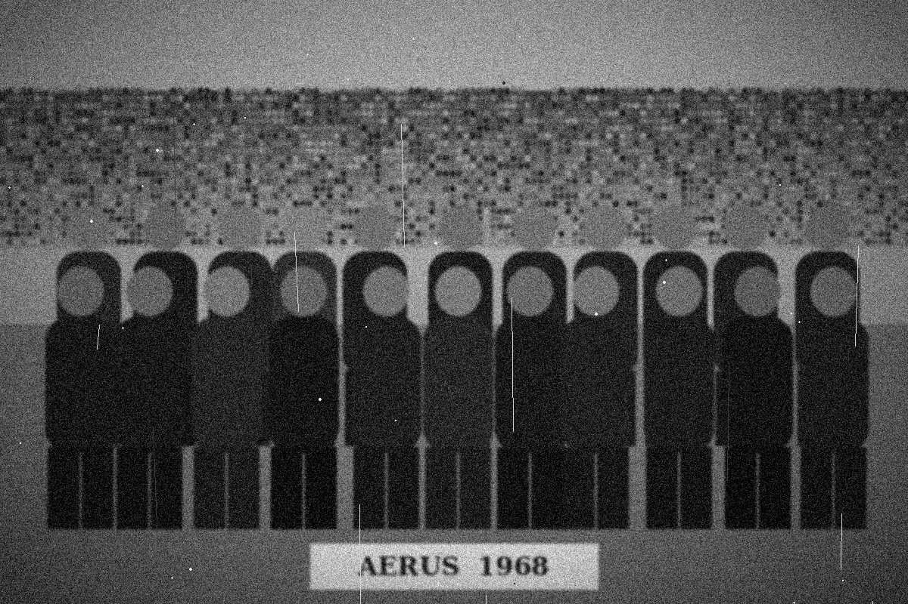
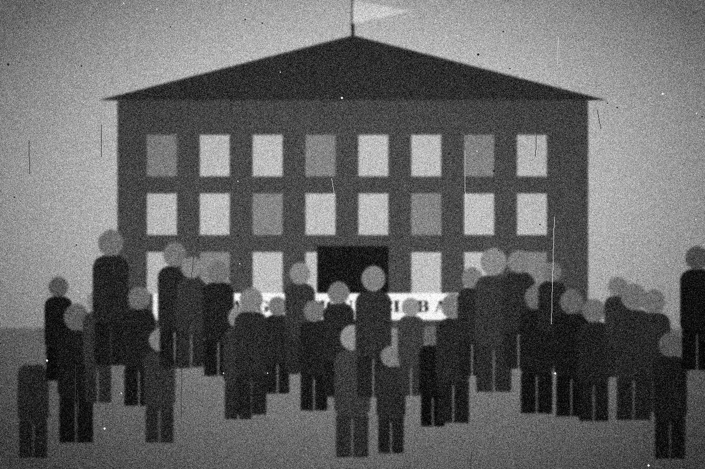
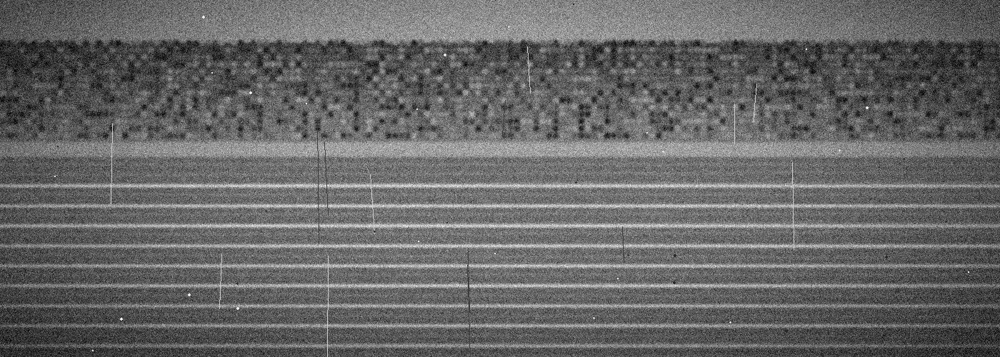
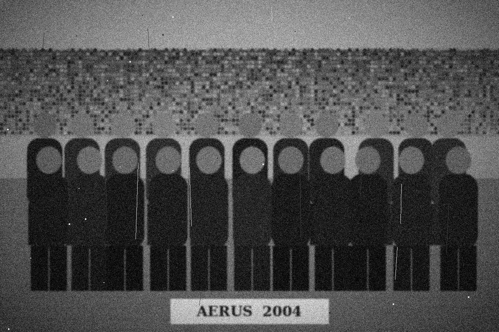
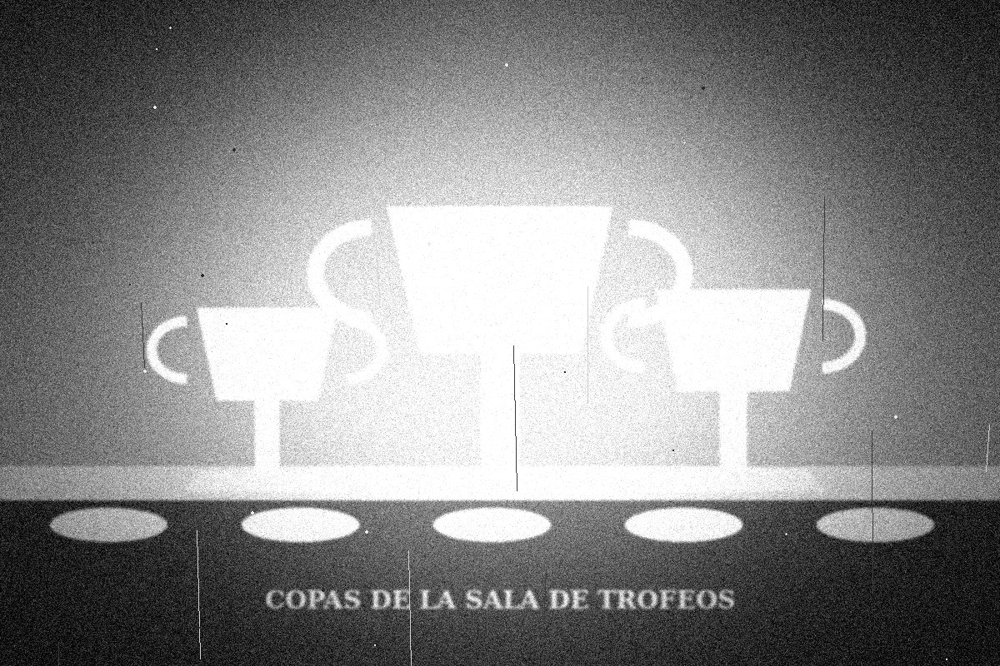

1968
El primer gran ascenso
El equipo de fútbol logra 14 partidos invictos y asciende a la liga metropolitana. Ese mismo año nace la sección de karate en el sótano de la sede.


Desde 1952 · Pasión de barrio
En aerus club creemos que el deporte es mucho más que competir: es disciplina, unión y pasión compartida. Nacimos con la idea de crear un espacio donde cada entrenamiento, cada partido y cada desafío se conviertan en una oportunidad para crecer juntos.
Todo empezó en 1952, cuando un grupo de vecinos de Palomar encabezado por Don Aurelio Ferreyra juntó entre todos los ladrillos, las maderas y unos cuantos pesos para levantar una canchita donde los pibes pudieran jugar sin cruzar las vías.
Aquel domingo de inauguración asistieron más de 400 personas, se cortó una cinta celeste y dorada, y el primer equipo de fútbol salió a la cancha con camisetas prestadas. Desde entonces, el club no paró de crecer: nuevas sedes, nuevas disciplinas y, sobre todo, nuevas generaciones que llevan los colores con orgullo.

El equipo de fútbol logra 14 partidos invictos y asciende a la liga metropolitana. Ese mismo año nace la sección de karate en el sótano de la sede.

Se inaugura la primera pileta de 25 metros del barrio. Durante años fue el lugar donde aprendieron a nadar tres generaciones de familias.

Campeón de la Liga Metropolitana ante una tribuna desbordada. La caravana por el barrio duró hasta la madrugada y todavía se cuenta en las mesas del buffet.

Con la mejor camada de juveniles de la historia, el club conquista la Copa de Oro y se consolida como referente deportivo de la zona oeste.

Con la apertura de Parque Patricio, Aerus completa sus tres sedes y suma más de 30 disciplinas para que cada socio encuentre su lugar.
